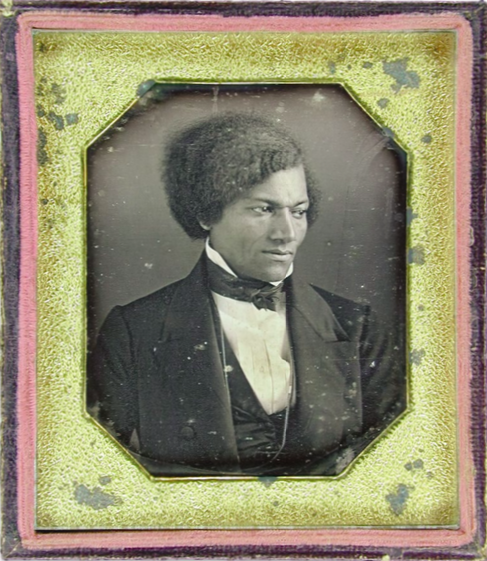
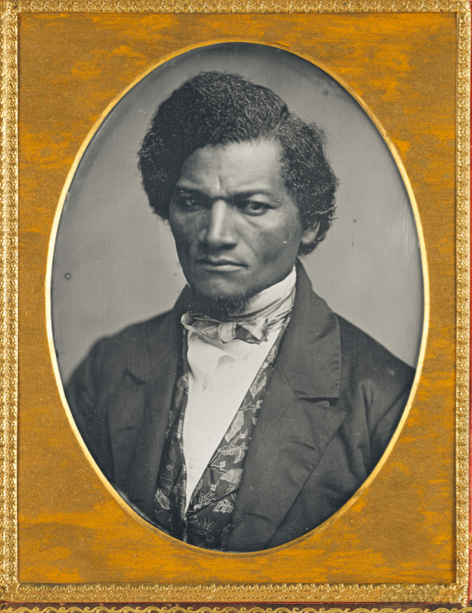

Frederick Douglass was an avid supporter of the practice of photography, and participated in many portraits throughout the 19th century. Douglass' support for photography, however, was very intentional. In his speech Pictures and Progress, Frederick Douglass praises the invention of the Daguerreotype image. Douglass mentions its ability to show incredible detail: "It strikes human nature on the weakest of all its many weak sides." The ability of the Daguerreotype to reveal such immense detail forces one to focus more upon their outward image. For, Douglass notices that the photograph allows one to see oneself from an outside perspective. In addition, Douglass says that "Men of all conditions may see themselves as others see them." The Daguerreotype allows for the visual representation of the forgotten members of society who were often left out of artistic images of the past. Photographs allow people to see themselves as others see them" letting people assess their outward image and improve themselves not only personally but in the eyes of the public. Douglass saw photography as the gateway with which one could spark social change by changing one's public image.

Concurrently, Douglass saw photography as the ideal way for a minority to form a public representation. In a time when blacks had no public voice, and the prevailing public opinion of African Americans was demonstrated in racist caricatures, the photograph was the ideal instrument to demonstrate a more truthful image for African Americans. Julia Faisst succinctly puts it: "photographic images are not only democratizing and truer now but ideally suited to lead audiences closer to all truths which must, first of all, include the truth of African American slavery and how to progressively picture its imminent yet gradual abolition." With the emergence of the Civil War, Douglass saw the opportunity for the emergence of a new era of freedom. Photography could be used to path a new visualization of African American identity as an "appropriate representation." Photographs were physical proof of one's identity, and the ease of which photographs could be made available was a promising prospect for future reparation of African American public image. We can see through many of Douglass' own portraits ways in which he tries to build this new African American identity, including the examples on this page.
On the left, Douglass stares defiantly into the camera, demanding an acknowledgment of his humanity. Douglass uses this photograph as a way to demonstrate, factually, a strong yet eloquent presence. On the right, rather than looking straight into the camera he looks away, giving the sense that something else has caught his attention. Douglass' clothes are more crisp and organized, giving himself a more official, put together look.